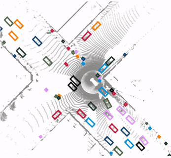
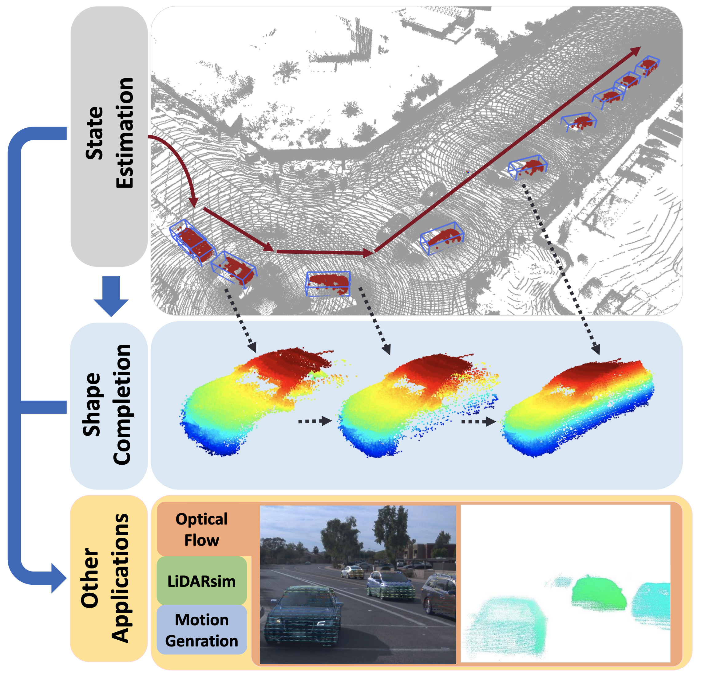

My research concentrates on 3D perception and prediction in computer vision. Autonomous driving is my major handle because of its multi-facet challenges and huge impacts to the real-world. For instance, my expertise covers:
Diverse components (detection, tracking, and prediction)
Multiple sensors (cameras and LiDAR)
Single/multi-frame reasoning (detection and tracking)
Onboard/offboard applications (BEV perception and auto-labeling)
Meanwhile, I am also exploring these techniques for other applicational scenarios and real-world products. Please emails me if you wish to collaborate for research, start-up, consulting, etc.
Frozen transformers from language models, though trained solely on textual data, can effectively improves diverse visual tasks by directly encoding visual tokens.
SST emphasize the small object sizes and sparsity of point clouds. Its sparse transformers enlight new backbones for outdoor LiDAR-based detection.

SimpleTrack: Understanding and Rethinking 3D Multi-object Tracking (Alias: SimpleTrack) Ziqi Pang,
Zhichao Li,
Naiyan Wang ECCV Workshop, 2022
Code
/
arXiv /
Patent
SimpleTrack is simple-yet-effective 3D MOT system with more than 200 stars on GitHub.

Model-free Vehicle Tracking and State Estimation in Point Cloud Sequences (Alias: LiDAR-SOT) Ziqi Pang,
Zhichao Li,
Naiyan Wang IROS, 2021
Code
/
arXiv /
Demo
LiDAR-SOT is a LiDAR-based state estimation algorithm for both the onboard usage of redundancy system and offboard usage of auto-labeling.
Huge thanks to Jon Barron for proving the template for the page.
{kind=link}